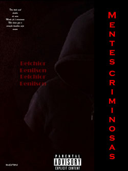
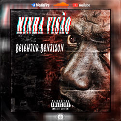
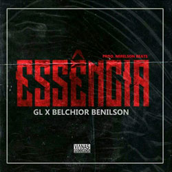
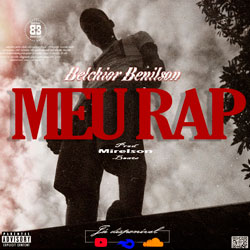

Este site foi desenvolvido para divulgar meu projectos musicais
Sobre
Nascido aos 22 de Fevereiro de 2002, Belchior Cassumba Sapalo, vulgo Belchior Benilson, é um artista musical natural da província do Huambo, município do Bailundo.
Projectos lançados
Belchior Benilson - Mentes Criminosas
Belchior Benilson - Paz feat Poeta Lundindi
Gangue de Luxo - Essência feat Belchior Benilson
Belchior Benilson - Meu Rap
Belchior Benilson - Minha Visão
Álcool-Gel - Dramas e suicídios feat Belchior Benilson
Belchior Benilson - Versos da Alma (EP)
Projectos
Mentes Criminosas
Belchior Benilson
Bala perdida mais uma morte na banda e a zona está enlutada, tem brother que perdeu brother, e a mamã toda abalada enquato o velho é cheio de porrada, tentou entra em briga esqueceu que tem que respeitar a farda;
Nigga morto por um crime onde ele nem topou, não era suposto mas protector é que matou;
Como é que aconteceu? Não sei, o gatilho deslizou ou foi só porque pensou que foi o nigga que bolou o plano, então eu saio dali mais insano, aterrorizado porque perdemos mais um mano;
Mente confusa, estilo à gangster, "tenho que ser truta se não a vida vira puta" é tudo em que um gajo pensa;
E a mente entra em confronto com o coração e a fé é pouca mais ainda assim eu espero só não sei se Deus realmente me escuta mas Pai, se estiveres ao meu lado, por favor dê-me a sua mão...
Refrão
E tita todo mal dentro de mim, mente já écriminosa não deixe que o coração também seja assim!(2x)
Estrofe 2
Nasceu um novo dia, zona silenciosa;
Uma vela acesa para todos os manos já na cova, young nigga chora mas cala logo, lembra que ganhou mais um anjo no céu, à cada estrela uma nova pessoa;
Então eu tiro o pé fora da zona, coração cheio de ódio, pensamentos negativos, nervos no pódio;
Confuso comigo próprio, dominado pelo stress, God Bless porque ainda acabo na prisa ou no manicómio;
E o negativismo me chama, e o mal quer tomar conta de toda minha alma;
As vezes erramos porque somos obrigados, o mundo é confuso e nele nos matamos através da grana;
E eu sou filho de uma sociedade assombrosa;
Eu sou, membro de uma sociedade tenebrosa;
Eu sou, homem de comportamentos salutares, tudo na norma mas eu tenho a Mente Criminosa...
Refrão
E tita todo mal dentro de mim, mente já écriminosa não deixe que o coração também seja assim!(2x)
Título: Mentes Criminosas
Artista: Belchior Benilson
Prod: Vihannas Records
Ano: 2021

Minha Visão
Belchior Benilson
O quê que eu vim fazer nesse mundo? Essa é a pergunta que eu me ponho e tento achas respostas nas músicas que eu componho;
Já fui criticado pela maneira como eu me exponho e exponho a vida da gente que tem um presente pouco risonho;
Gente que corre atrás do sonho, gente que de tanto pesadelo tem medo do sono;
Aqui nessa zona onde as diferenças ideológicas entre partidos sobrepoem a dignidade do povo;
Esses corações choram e eu ouço, a minha arte é verdadeiera e por isso ainda morro;
A minha sociedade não é muda, é medrosa porque teme ser mal vista pela metrópole poderosa;
Aqui, mundo não é um mar de rosa está mais para um mar de sangue;
Alguns até perderam a vontade de ir avante;
Se fores um desses presta atenção nessa minha arte, se ainda estás vivo significa que não fizeste a tua parte;
Então meu brother bóra para o embate, és capaz e és forte, não te contentes com um empate;
Olha para mim, sou um sonhador como tu, náo és o único que sofres, há mais niggas como tu;
Então, não importa a minha distância, não descarte a minha visão porque ela tem importância;
Agora levante e vamos fazer a mudança porque enquanto haver fôlego sempre haverá esperança...
Esse Mundo é feito de perspectiva então eu trouxe a minha visão, e é muito normal se ela discrepar com a tua opinião, a gente está nessa batalha juntos, não temos o mesmo sangue mas o sofrimento tornou-nos irmãos;
O nosso azar foi ter nascido nessa geração onde não há esforço para nada porque tudo parece em vão;
Onde na igreja todo mundo é cristão, mas no exterior dela profanam até com as bíblias nas mãos;
Se ser cristão é ser como vocês eu prefiro continuar eu, mundo vos venda os olhos e a essência da bíblia se perdeu,
Hoje em dia a salvação é cara e o pagamento é dinheiro, não foi para isso que Jesus morreu;
Não sou dos mais santos mas também eu não sou ateu, não sou materialista porque eu acredito em Deus;
Só não confio nos seres humanos, principalmente naqueles que vivem do sofrimento dos meus;
Não reagir quanto à isso eu tento, mas o que os meus sentes eu tambeém sinto não estou isento;
E quando essa voz chegar aos teus aposentos lembre, que essa é a visão vinda do ghetto...
Refrão
Esaa é a visão vinda do ghetto, porque o young nigga vem do ghetto, Ngana Nzambi abençoe só meu ghetto, porque a minha family está no ghetto.
Título: Minha Visão
Artista: Belchior Benilson
Prod: Vihannas Records
Ano: 2022

Título: Essência
Artista: GL feat Belchior Benilson
Prod: Vihannas Records
Ano: 2022

Meu RAP
Belchior Benilson
Entrei no game há pouco tempo e os niggas já se apegaram;
O RAP que eu faço é real por isso os fake's se afastaram, niggas se abstiviram viram que não podiam me usar, a mente é criminosa ficaram trémulos e bazaram;
Niggas, todos malaikes com esse meu RAP, há já um bom tempo que não ouviam do bom Boom-Bap, vindo dessas street's da zona sul, porque o meu skil aqui é raro tipo niggas de olhos azuis;
Diferente de alguns manos eu pus sentimentos nessas rimas, empenho nas canetas, alma em todas as escritas e eu dri, motivo de lutas à quem já não tinha e esperança de victória à que não via;
E é por isso e por muito que esse meu RAP discrepa desse vosso, então vos aconselho a fazer esforço de fazerem mais esforço, diferente de vocês o Hip-Hop está no osso, hoje eu faço só meu rap e amanhã meu RAP faz guita à grosso...
Refrão
Então não fala do meu RAP, porque vocês não fizeram, só vivem de aparência verdade vocês não trazeram... poque o meu RAP é real, é da street e vocês fingem que não mas sei que estou nos vosso dream's
Então não fala do meu swag, não são vocês que pagaram, e quando eu precisei nenhum dedo vocês levantaram mas hoje todos apontam dedos para me julgar mas quando eu preciso nenhum de vocês está lá mas o meu RAP está lá...
Estrofe 2
My nigga eu não o King, meu mano eu não o best, sou só um nigga que quer elevar o seu step;
Revolucionar a história desse Hip-Hop tipo 2Pac, not perfect, mas o meu RAP não é só de damas tipo de alguns então mais respect;
Sempre com os homies eu tenho a Maestros na minha back, sempre incomum e eu trago isso em cada track;
Diferente do meu RAP o RAP que fazem é weck me afasto de fake's só com um clique, backspace;
Nigga finge que odeia mas eu sei que ele adora, já vejo a meta e tu ainda está sentado, mano corra;
Não me compare, estou muito diferente nessa porra, para não copiarem vou desaparecer com a copiadora;
Meter-se com os meus acredita, não é bom plano, porque eu tenho santos e também tenho niggas insanos ah!;
Então não fala mal desse meu RAP, porque se o fazes mexes comigo e se mexes comigo mexes com meus manos...
Refrão
Então não fala do meu RAP, porque vocês não fizeram, só vivem de aparência verdade vocês não trazeram... poque o meu RAP é real, é da street e vocês fingem que não mas sei que estou nos vosso dream's
Então não fala do meu swag, não são vocês que pagaram, e quando eu precisei nenhum dedo vocês levantaram mas hoje todos apontam dedos para me julgar mas quando eu preciso nenhum de vocês está lá mas o meu RAP está lá...
Título: Meu RAP
Artista: Belchior Benilson
Prod: Vihannas Records
Ano: 2022

Alma Poética
Belchior Benilson
"Mekié meu tropa Benilson, olha na verdade eu sigo a tua carreira astística desde a primeira música até então, e de todas as músicas que eu já ouvi vinda de ti, eu consigo notar que você coloca alma nas tuas músicas, você carrega a vida do Musseque para as tuas músicas, você dá voz aos sem vozes, você dá alegria àquelas pessoas que não têm alegria, você consegue transmitir realmente, o cotidiano das pessoas, das mamãs zungueiras, dos órfãos..."
Estrofe 1
Ahm! Tenho uma alma poética que expressa sua dor por meio desses versos, e vem tentando fazer o que é certo;
O que tem sido difícil porque a certeza é relativa e as vezes estamos errados só por estarmos certos nesse mundo incorreto;
Nesse mundo imundo, onde tudo pode mudar em segundos, experiências trauamatizam então o nigga é bué profundo;
Habituados com quedas, nigga a minha tropa vem do fundo e é do fundo que vem a inspiração, nossos motivos diferem, não tem como fazer a mesma cena irmão;
Sucesso para ti é alcançar fama, para mim é mudar vidas então não admira que entre a nossa arte haja diferenciação;
Ma anyway, diferença faz o mundo, muita gente quer ter tudo por isso ninguém tem tudo;
No Musseque o sofrimento nos fez deixar de ser mudos, há quem chora e há quem escreve e canta para tirar a dor do fundo, shi!
Dia e noite a gente ora, e se cairmos vamos lutar rastejando, o sofrimento é tenebrosos então a gente chora porque lágrimas nos olhos são suor dessa gente que vai lutando;
E aqu a gente luta todos os dias durante o dia todo, e nem parece que ele corre por Angola porque o sofrimento aqui no meu Musseque é gordo nigga...
"Mekié Benilson? Daqui fala o teu boy Thio Adilson é só para dizer que eu sinto-me previlegiado em estar a testemunhar mais um passo na tua carreira"
"Ei you Wassup BB, como é que é meu cota? Daqui fala Boy Killer directamente do Sambizanga, eu acompanho a tua carreira, são tantos anos de estrada, eu sei que és um nigga bué motivado, bué focado e isso já te faz um grande Rapper, meu cota não pare por nada, quero te lembrar que não estamos aqui por acaso"
"Belchior Benilson, tu és meu sangue, meu irmão, meu soldier, tu és tudo para mim, meu best Rapper, alguém que conquistou o coração do povo do Bailundo do nada, com uma simples música intitulada Mentes-Criminosas. Digo assim, eu comecei a acompanhar o teu trabalho tão cedo e pude perceber que tu tens dom, tens talento, e tens o foco, naquilo que diz respeito ao mundo da música mano."
"Yeh mano, daqui é o Mô-S, teu irmão, yah, para dizer que eu venho a acompanhar
a tua obra desde so primórdios, como isso já é sabido por ti, e que, eu queria realçar que quando eu ouvi pela primeira vez aquela faixa que tinhas nos mostrado, a primeira faixa, eu fiquei mesmo embasbacado mano."
"Falar de Belchior Benilson é um grande orgulhio para mim, um artista que foi definido de tantas maneiras, inteligente, talentoso, diferenciado e humilde, um artista que recebe muito apoio da sua família, seus amigos, meu grande irmão, um artista que veio para revolucionar mentes perdidas"
"Uma parada no tempo, dou um replay no passado e aí eu vejo que a gente já se conhecia desde há bué time, o que um gajo não sabia é que ias te tornar nesse cantor completo, porque para mim é uma honra mostrar que és mais bad nessa amh! E até quando a gente discutia sobre o futuro, eu apenas falava sobre as possibilidades"
"Reinventar o discuro e palco, o Rapper entre saberes locais e olhares globais, impuseste-nos uma nova visão brow, mano tu és a prova que o RAP tem valor para quem se identifica, a música é a arte mais bela, ela entra pelo ouvido, vai para o coração e manifesta-se na alma, Versos da Alma, Mc-B, Let's get it."
Título: Alma Poética
Artista: Belchior Benilson
Prod: Vihannas Records
Ano: 2023
Carta para Deus
Belchior Benilson
Pai Santo! Eu venho me perguntando se ainda voltas ah!
Será que o senhor tem noção das pontas soltas ah!
É que aqui nessa terra está a ser difícil andar direito nessa nossa vida que só dá voltas;
Há duas semanas a morte bateu as portas e levou alguém especial e só nos deixou a dor e eu me pergunto "porquê será que eu não fui primeiro?", revolta mais revolta resultou em desespero;
Quando eu me ajoelho é à ti que eu clamo Jesus!
Sei que não devo julgar ninguém porque eu tenho minha cruz mas eu julgo, o que se traduz em pecados meus, então rezo para ver se sou perdoado por Deus;
Pai! Cuide dos meus que também são seus e faça com que saibam que existe alguém grandioso nos céus, mas não demore porque aqui a nossa fé é posta à prova e a cada minuto que passa mui dos seus tornam-se ateus.
Deus! Sei que eu não ando em bons caminhos mas mesmo em más caminhs nunca me deixaste sozinho porque o senhor é do tipo de pai que não abandona os filhos e mesmo eu sendo culpado me livraste de certos estrilhos onde, provavelmente era para eu ter morrido mas eu continuo aqui estou strong!
Já não há paz para essa nossa vida de guerra ah!
Já não há saúde para essa nossa doença ah!
Já não há alegria para a nossa tristeza e a luz quase que já não alcança as terras dessa selva;
Onde os lobos aguardam pela escuridão que não tarda e as pessoas se matam por um bocado que é nada;
Aqui nessa zona onde a bandidagem comanda, onde a farda é tida como licença para encher de porrada;
Pessoas que por não terem para muitos são fúteis, acham que bens reflectem carácter? Bando de inúteis ah!
Mas anyway Pai Santo eu sou o Rapper que vós criastes e é para vós que eu compus esse Boom-Bap então espero que o escutes porque...
Refrão
Essa é uma carta para ti meu Pai, espero que atendas porque foi para ti que eu escrevi, essa é uma carta para ti, foi para ti que eu escrevi (2x)
Estrofe 2
Além do que eu disse outrora vou contar uma história;
De uma senhora que perdeu a dignidade para ganhar o pão de cada dia, que não fechou as pernas para ver se seu futuro e de sua família se abria;
E eu ainda sinto pelo suicídio do meu nigga e as causa provavelmente foram os dilemas da vida e ele perfcebeu que era melhor morrer doque passar mais um dia nessa vida, ou melhor, nessa nossa morte em forma de vida;
História daquela criança desnutrida que tem as ruas como seus pais e os mendigos como sua família, porque seus projenitores negligenciaram o inocente paga e vê um castigo à cada ferida;
E eu me pergunto porque o senhor lhe castiga, pois não foi escolha dele fazer parte dessa vida maldita;
Se ainda voltas Pai acredita que a hora é essa porque se tardas encontras a humanidade toda perdida porque, ela está cheia de trastes, e eu sei que vós sabeis só espero que não surtes mas anyway, Pai Santo eu sou o Rapper que vós criaste e é para vós que eu compus esse Boom-Bap então espero que o escutes porque...
Refrão
Essa é uma carta para ti meu Pai, espero que atendas porque foi para ti que eu escrevi, essa é uma carta para ti, foi para ti que eu escrevi (2x)
Título: Carta para Deus
Artista: Belchior Benilson
Prod: Vihannas Records
Ano: 2023
R.I.P
Belchior Benilson
Com certeza uma das piores dores é ver, um outro homem a ser enterrado, um outro homem a ser posto num buraco dentro de um caixão, e tantas pás de areia a serem-lhe atiradas;
Naquele momento as reflexões vêm à tona e o coração chora, mas ainda há tanto para se viver então a gente implora, pedindo à Deus que otraga de volta mas mesmo sabendo que Deus nos ouve a gente chora poque já não há volta, shit!;
Coração partido, mentes revoltadas, por instantes a vida perde o sentido e até a própria palavra de Deus é julgada, porquê o senhor fez isso? Questiona assim a família enlutada;
Tantas perguntas sem resposta, tantos planos mortos, tantos sonhos se foram e condicionaram tantos outros, tantas lágrimas caídas, tantas pessoas abatidas, todas confusas com a merda de vida;
É mais uma viúva, é mais uma mãe que perde o filho ou filha, é mais um órfão, é mais uma estrela que brilha, é mais um pai que perde alguém da família, uma Pai Nosso diante de uma vela acesa e assim a gente homenagia;
Todos que já não fazem parte desse mundo, que em um segundo perderam a vida e mudaram tudo nas nossas vidas, shit! Descansem em paz meus niggas, descanse em paz família;
Morte é tipo a justiça, as vezes é injusta mas dizem que Deus sabe o que faz então nissa se reajusta, eu sei o quanto custa mas é o melhor a fazer, és um guerreiro e tens que continuar a tua luta;
Tens que viver pelos que estão mosrtos e por aqueles que ainda vivem, e hoje eu acredito quando me dizem que os melhores partem cedo, essa realidade é controversa e tira o sossego então te aconselho a, viver todos os dias da tua vida como se fossem os últimos dias da tua vida, de modo a aproveitar melhor os momentos, aproveite o teu tempo nigga, porque...
Refrão
Levamos tempos a construir a vida mas para a perder basta um segundo, os melhores partem cedo e essa é a triste realidade desse mundo, e para os que estão em cima eu quero que saibam que um dia nós estaremos juntos mas enquanto isso eu vou brilhar, e vocês descansem em paz (2x)
Título: R.I.P
Artista: Belchior Benilson
Prod: Vihannas Records
Ano: 2023
Solidão
Belchior Benilson
Pessoas se afastam de mim sem dizer nada, ao poucos a solidão vem se tornando a minha camarada;
Hoje tenho enemies que ontem chamei brother, dei confiança e a vida em troca me deu porrada;
Nigga me abraçava com um braço e noutro segurava uma faca, mas mereci o apunhalo porque eu fui sucker;
Confiei quando eu devia ter duvidado, abri o coração e por esse erro fui bué magoado;
Quem dera, que meus sentimentos por mim fossem controlados, que quando eu quisesse o meu coração estivesse fechado, acho que assim eu não teria passado por más bocados que tornam todo um fraco retardado, ma eu vou dando conta do recado, e talvez eu não seria quem sou se não tivesse passado;
E eles dizem que o sofrimento nos torna homens, mas são eles mesmos que quando vem o sofrimento somem...
Refrão
E a gente sorri por fora mas é dentro que está a perdição, então o young nigga tem os beats para meter as shits do coração, estamos rodeados de gente, mas nos setimos na solidão, solidão...
Estrofe 2
Sei que eu não sou dotado de perfeição, e talves seja eu próprio o motivo da minha solidão;
Talves se afastem de mim porque eu não lhes faço bem, mas é suposto o sucesso de um amigo fazer bem ao amigo, ou melhor, àquele que diz ser, porque geralmente é m,ais cego aquele que diz ver, é mais burro aquele que diz saber tudo;
E eu temo mostras meus sentimento ao mundo porque esse mundo brinca com tudo, nesse mundo exigente e duro, não faço tudo pelas pessoas porque elas não valorixam tudo, elas procuram erros para nos jugar e estão por perto de nós tudo para nos verem a falhar suckers;
O bom é que eu não faço para vos agradar, eu tenho a minha família e meus real niggas para orgulhar, e eu sei que não sou o único nessa situação e se também está nela eu desejo coragem irmão.
Refrão
E a gente sorri por fora mas é dentro que está a perdição, então o young nigga tem os beats para meter as shits do coração, estamos rodeados de gente, mas nos setimos na solidão, solidão...
Título: Solidão
Artista: Belchior Benilson
Prod: Vihannas Records
Ano: 2023
Minha Morte
Belchior Benilson
Vi essa luzes se apagarem, e eu não podia respirar;
Vi meus olhos se fecharem e eu não podia enchergar;
Eu vi, meu corpo do físico ao espiritual passar e a minha família as providências do meu enterro tomar;
Então eu percebi, que já não estava entre vós, vi meu corpo deitado mas o sentia tão longe, e eu tentava alcançá-lo, porra eu não queria ir hoje e enquanto eu tentava de lá debaixo eu ouvia uma voz que lamentava aos gritos, que olhando para o céu lacrimejava perguntando porquê que Deus tinha lhe feito isso, e ao lado dela estavam outros que abatidos não acreditavam que aquilo tinha acontecido;
Não acreditavam que ou young nigga se foi, e a morte é sim uma certeza mas quando ela chega ainda dói;
Shit! dói saber que vai ser assim e quando eu estava no abismo interno foi só que eu percebi...
Refrão
Mano não importa a tua riqueza, wawe, porque no fim tu não leva nada pr'o inferno ou pr'o céu, e do mais santo ao mais gangster, do pastor até as ovelhas a morte é certa e no fim eu só peço Pai me leve antes dos meus, por favor meu Deus
Estrofe 2
Hoje eu tive um so nho com a minha morte e quando acordei refleti;
Fiz uma retrospectiva de tudo que eu já fiz aqui nesse mundo;
E se eu hoje partir, será que o mundo vai lembrar de mim, do que eu sou e do que eu fui?;
Quanto bem eu já fiz po aqui? Quantas pessoas já feri com palavras que eu proferi e com mus actos? Por mais que tenham sido espontâneos;
Quanto eu pequei? Meu Pai, quantas vezes eu fui ingrato? ah!;
E esse pensamentos fodem a cabeça e eu sei que não mereço mais ainda lhe peço a sua bênção e eu lhe peço, por favor tende piedade de mim, não me deixer ir antes de compensar o que os velhos fazem por mim;
E eu sei que cabe a vós a decição só que seu partir agora todo o esforço deles terá sido emvão;
Eu sei que a morte é realidade sem excepção e nós nascemos para morrer, então vida é escolha sem opção...
Refrão
Mano não importa a tua riqueza, wawe, porque no fim tu não leva nada pr'o inferno ou pr'o céu, e do mais santo ao mais gangster, do pastor até as ovelhas a morte é certa e no fim eu só peço Pai me leve antes dos meus, por favor meu Deus